001 · fork(): una llamada, dos procesos
linux · rendered · 21s · día 1
TiInThFaYoRe
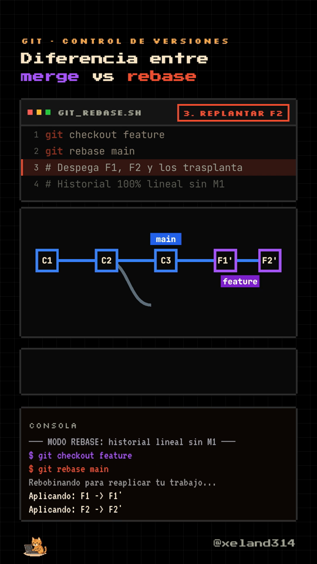
002 · Git: merge vs rebase
git · rendered · 21s · día 4
TiInThFaYoRe

003 · TCP vs UDP: confianza vs velocidad
redes · rendered · 22s · día 5
TiInThFaYoRe

004 · Spoofing y phishing: DMARC lo frena
ti · rendered · 24s · día 9
TiInThFaYoRe
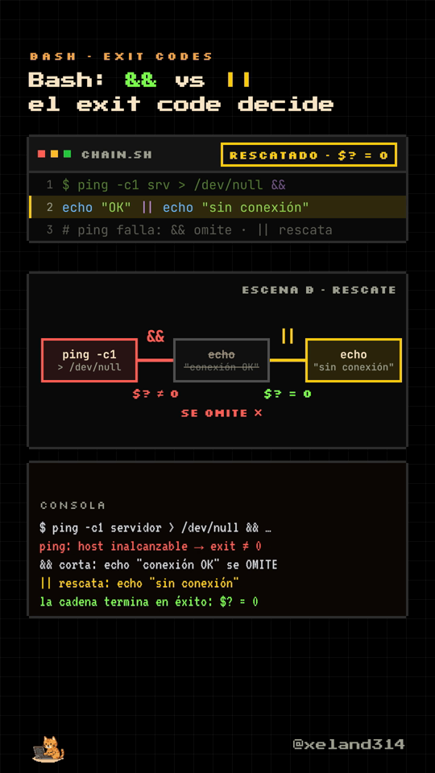
005 · Bash: && vs ||
linux · rendered · 21s · día 3
TiInThFaYoRe
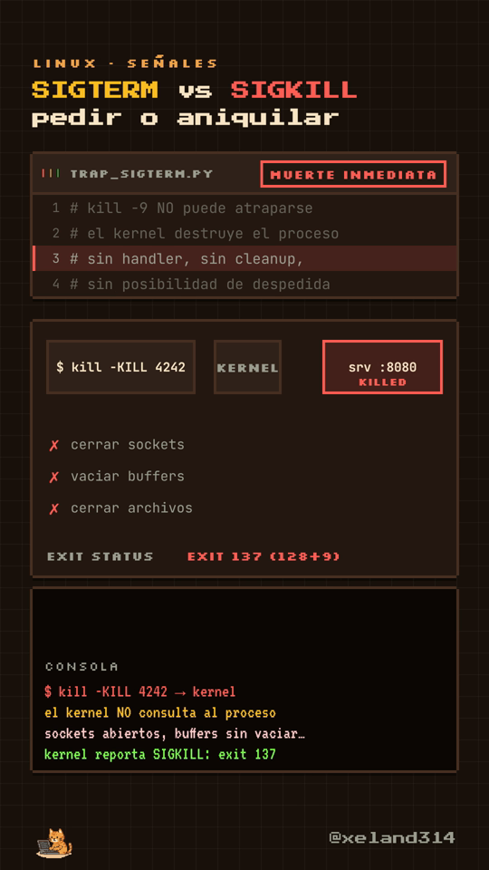
006 · SIGTERM vs SIGKILL
linux · rendered · 21s · día 2
TiInThFaYoRe
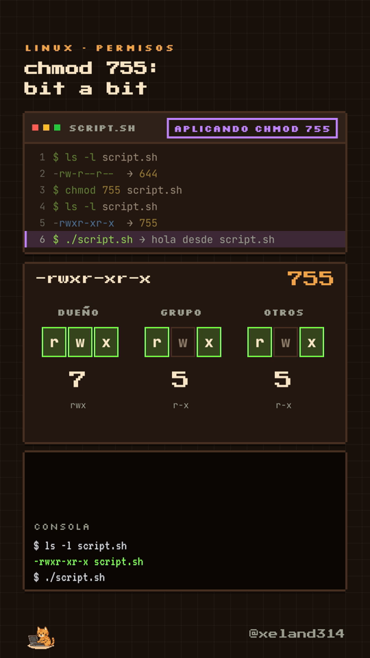
007 · chmod bit a bit
linux · rendered · 21s · día 6
TiInThFaYoRe
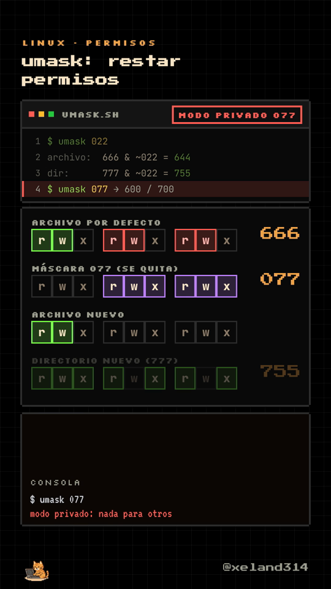
008 · umask: permisos por defecto
linux · rendered · 20s · día 17
TiInThFaYoRe
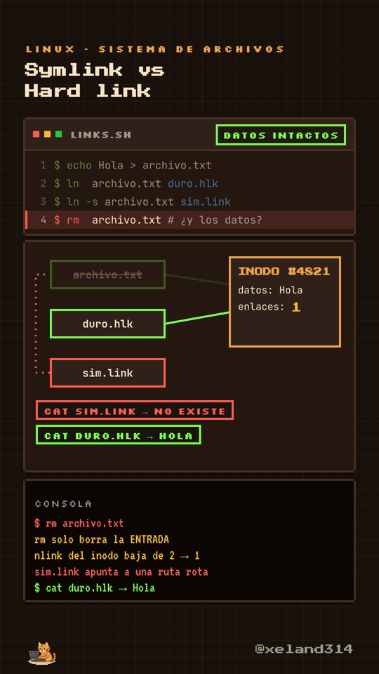
009 · Symlink vs Hard Link
linux · rendered · 20s · día 11
TiInThFaYoRe
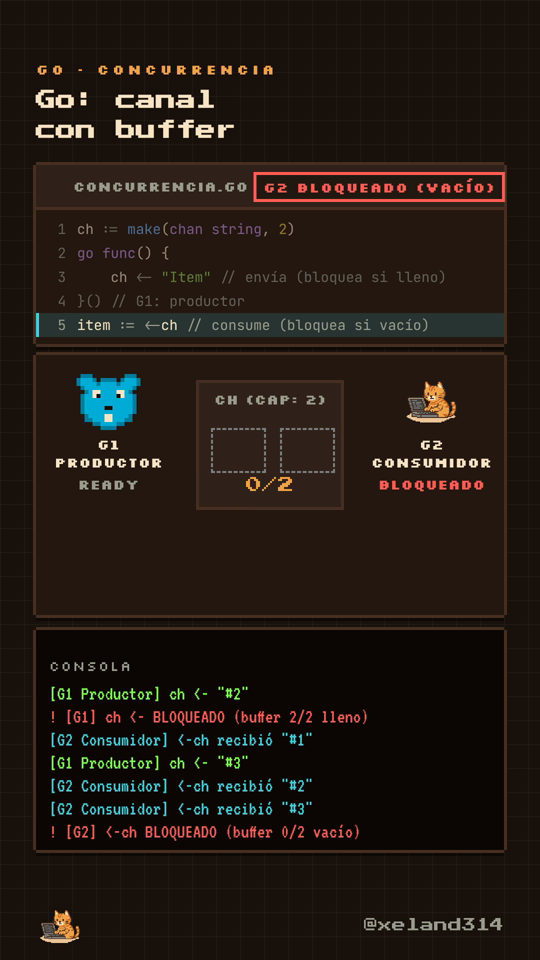
010 · Go: canal con buffer
go · rendered · 22s · día 12
TiInThFaYoRe
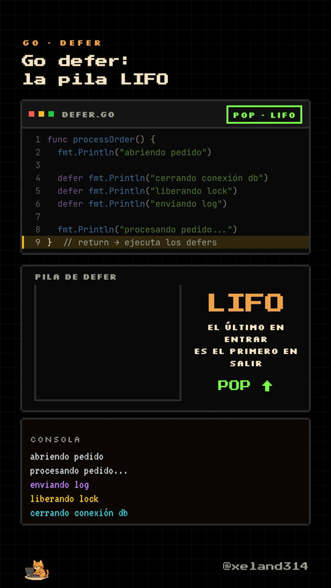
011 · Go: defer (LIFO)
go · rendered · 20s · día 16
TiInThFaYoRe
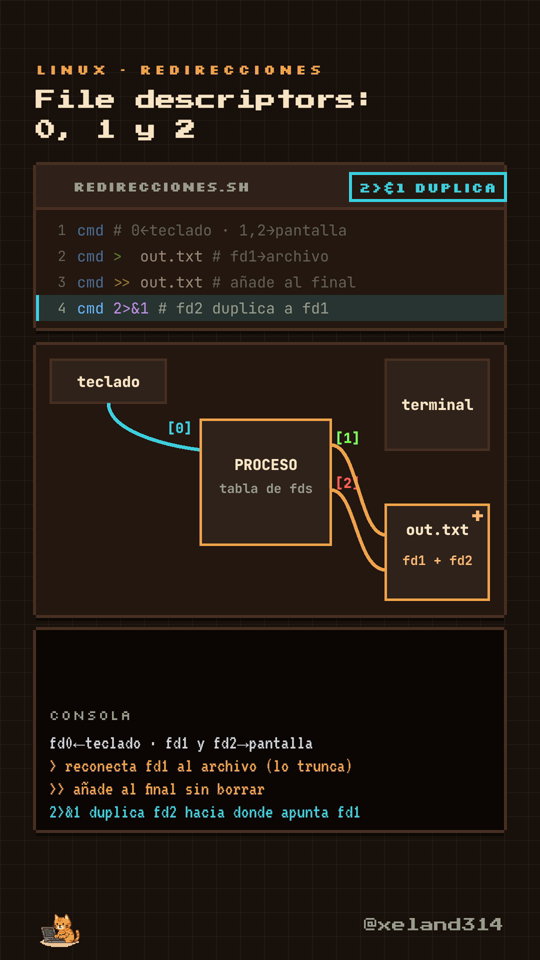
012 · File descriptors y redirecciones
linux · rendered · 20s · día 19
TiInThFaYoRe
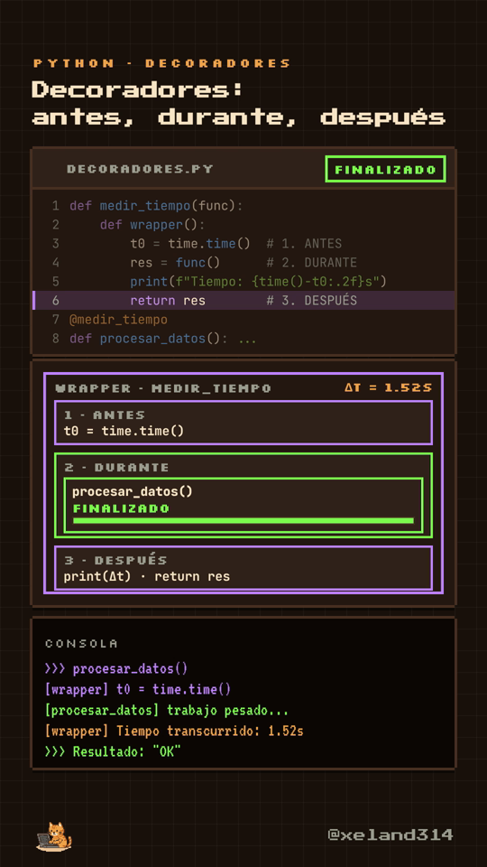
013 · Python: decoradores
python · rendered · 18s · día 8
TiInThFaYoRe
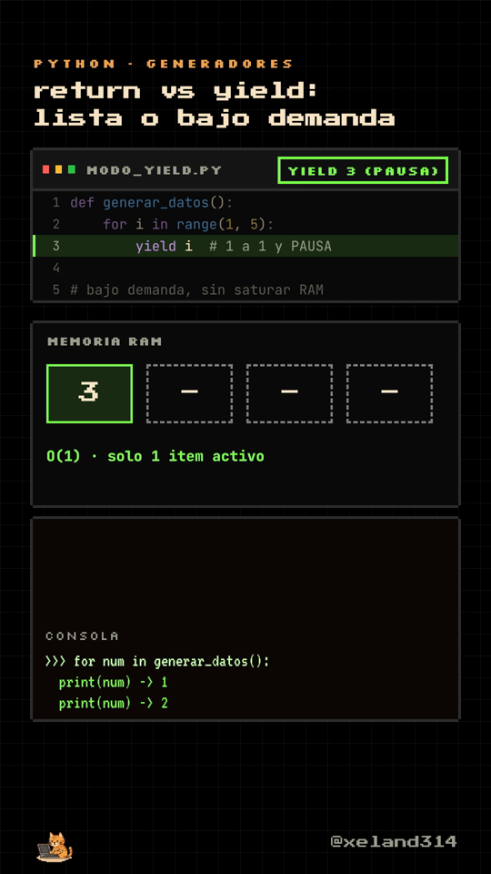
014 · Python: return vs yield
python · rendered · 21s · día 10
TiInThFaYoRe
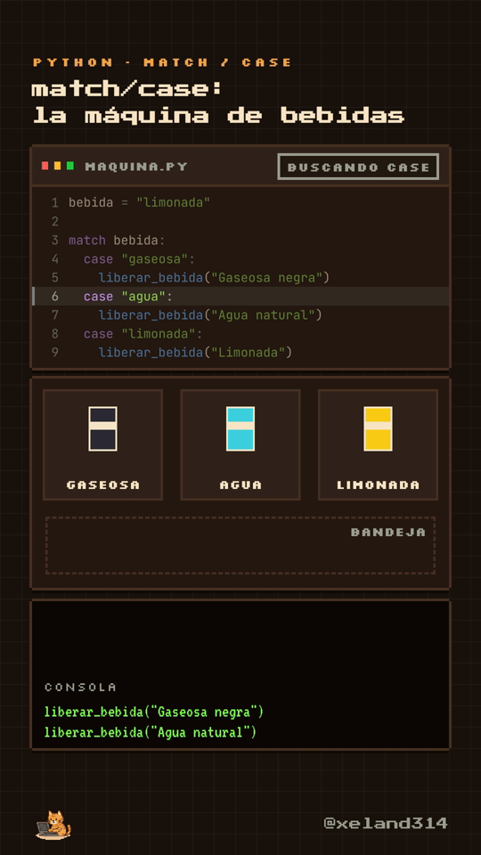
015 · Python: match/case
python · rendered · 19s · día 13
TiInThFaYoRe
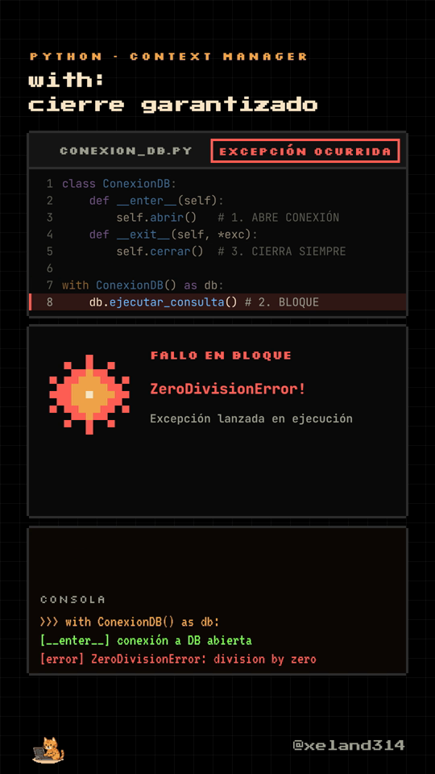
016 · Python: with (context manager)
python · rendered · 21s · día 20
TiInThFaYoRe
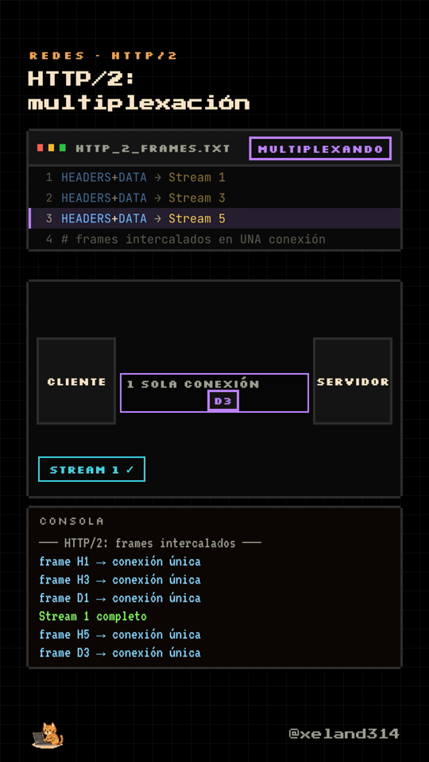
017 · HTTP/2: multiplexación
redes · rendered · 22s · día 23
TiInThFaYoRe
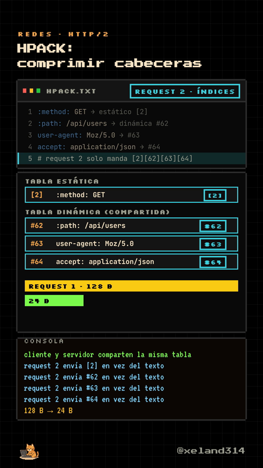
018 · HTTP/2: HPACK
redes · rendered · 22s · día 25
TiInThFaYoRe
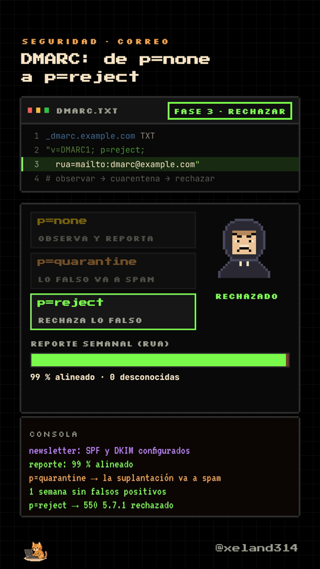
019 · DMARC: de p=none a reject
ti · rendered · 20s · día 15
TiInThFaYoRe
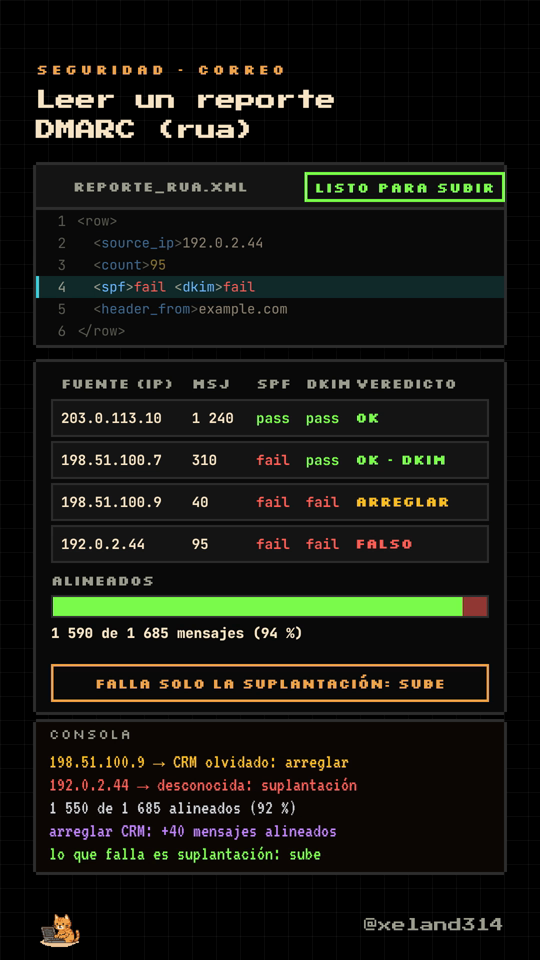
020 · DMARC: cómo leer un reporte
ti · rendered · 20s · día 18
TiInThFaYoRe
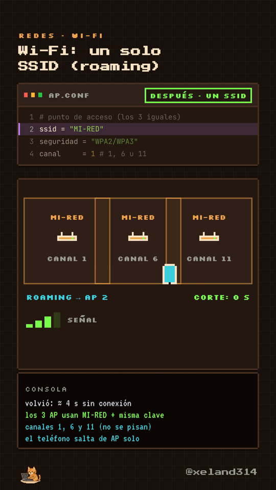
021 · Wi-Fi: un solo SSID (roaming)
ti · rendered · 21s · día 22
TiInThFaYoRe